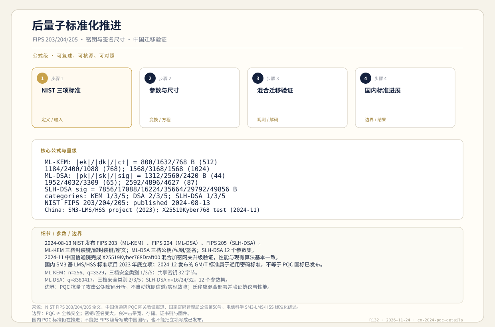

原理与机制
中国密码史：后量子标准化推进（Post-Quantum Standardization Advancing）。2024-08-13，NIST 同时发布三项后量子标准：FIPS 203 的 ML-KEM（模格密钥封装）、FIPS 204 的 ML-DSA（模格签名）与 FIPS 205 的 SLH-DSA（无状态哈希签名）。这三项把“抗量子公钥密码”从竞赛算法变成可引用的参数集：ML-KEM 负责共享密钥，ML-DSA 负责签名，SLH-DSA 提供不依赖格假设的保守签名路线。

为什么重要
后量子不是“把 RSA 换掉”这么简单，尺寸是最直接的工程约束。ML-KEM-512 的封装键 800 字节、解封装键 1632 字节、密文 768 字节；到 ML-KEM-1024 变成 1568/3168/1568。ML-DSA-44 的公钥/私钥/签名为 1312/2560/2420 字节，ML-DSA-87 为 2592/4896/4627。SLH-DSA 的签名从 7856 到 49856 字节，公钥仅 32/48/64 字节。尺寸直接影响握手、证书链、固件、存储与带宽；同一套协议在 PQC 下可能需要分片、压缩或混合模式。
应用与实例
迁移通常先做混合：传统 X25519/ECDHE 与 ML-KEM 组合，签名侧逐步引入 ML-DSA 或 SLH-DSA。2024-11 中国信通院联合企业完成 X25519Kyber768Draft00 的网关升级验证，测了协议功能一致性、并发用户、连接数、吞吐、时延与稳定性。这类验证回答“现有系统能不能跑”，不回答“参数集是否适合所有场景”；生产迁移还要做证书链、密钥生命周期、性能容量与回退方案。
边界与攻击面
常见错误包括：把 PQC 当“全栈安全”；把 FIPS 参数集直接写进中国国标；忽略签名/密钥变大导致的 MTU、证书链和固件容量问题；把一次网关测试当全行业认证。国内进展要分开写：SM3 基 LMS/HSS 标准项目在 2023 年底获密标委立项，说明哈希签名路线在推进；2024-12 国家密码管理局公告第50号发布的是 19 项通用 GM/T 标准，不是 PQC 国标已经发布。
历史与背景
2024-08-13 是国际后量子标准化的节点：FIPS 203/204/205 同日发布，ML-KEM、ML-DSA、SLH-DSA 从候选算法进入联邦标准。中国侧，2024-11 中国信通院完成 X25519Kyber768Draft00 混合加密网关升级验证；2023 年底 SM3 基 LMS/HSS 标准项目获密标委立项；2024-12 国家密码管理局公告第50号发布 19 项 GM/T 标准，其中包含 GM/T 0001.4-2024 等通用标准，但不应误写成 PQC 国标。
时间线、证据与争议
登记年份为 2024；背景是后量子中此前技术、机构与冲突的累积；过程只写有来源支持的参与者、地点与行动；结果写它改变了哪些标准、机器、课程或政策；争议写二手叙述与一手材料的差距。来源包括：Wikipedia search entry for 后量子标准化推进；《密码简史：穿越远古 展望未来》（杨义先、钮心忻，电子工业出版社，2020，ISBN 9787121398711）。
不要把“发生过”写成“已证明”，也不要把事件标题扩写成机制结论；没有日期的节点只作逻辑位置。
逐步示例与核验
事件时间线模型
背景 → 过程 → 结果 → 争议。背景写此前技术/制度；过程写可核参与者与时间；结果写后续标准、机器、课程或政策；争议写二手叙述与一手材料的差距。
参考出处
- Wikipedia search entry for 后量子标准化推进. https://zh.wikipedia.org/w/index.php?search=%E5%90%8E%E9%87%8F%E5%AD%90%E6%A0%87%E5%87%86%E5%8C%96%E6%8E%A8%E8%BF%9B
- 《密码简史：穿越远古 展望未来》（杨义先、钮心忻，电子工业出版社，2020，ISBN 9787121398711）. https://book.cppinfo.cn/Encyclopedias/home/index?id=3730464